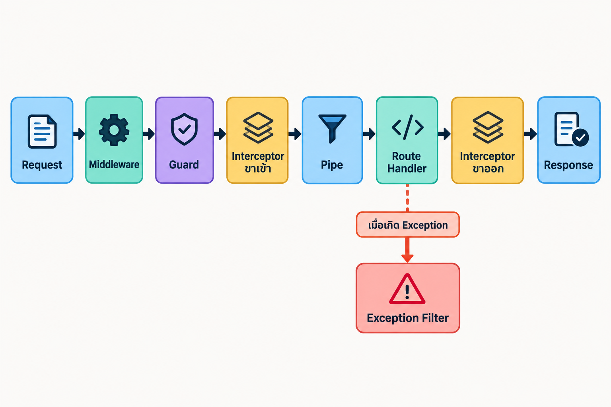

NestJS Fundamentals Workshop · บทที่ 36/58
Request Lifecycle และการ Bind Building Blocks
บทนี้เราจะทำอะไรบ้าง
- บอกหน้าที่และลำดับของ exception filters, guards, interceptors และ pipes ใน request lifecycle
- เลือก building block ให้ตรงกับงาน เช่น เช็คสิทธิ์ แปลง input หรือจัดรูป response
- Bind building block ได้ทั้ง global, controller, method และ parameter scope
- เลือกระหว่าง
useGlobalPipes()กับ provider tokenAPP_PIPEได้ถูกสถานการณ์
สี่ตัวละครใหม่ในโครงสร้างของ Nest
ถึงตอนนี้เรารู้จัก controllers, providers และ modules แล้ว แต่ NestJS ยังมี building blocks สำหรับ features อีก 4 แบบที่ยังไม่ได้ลงลึก ได้แก่ exception filters, pipes, guards และ interceptors — แต่ละตัวเป็น class ที่แทรกเข้าไปใน request lifecycle คนละจุด เพื่อแยก cross-cutting concern (logic ที่ทุก endpoint ต้องการเหมือนกัน) ออกจาก business logic
| Building block | หน้าที่ | ตัวอย่างการใช้ใน iluvcoffee |
|---|---|---|
| Exception filter | จับ exception ที่หลุดออกมา แล้วแปลงเป็น response ที่ควบคุมรูปแบบได้ | จัดรูป error ทุกตัวให้มี timestamp และ path เหมือนกัน |
| Guard | ตัดสินใจว่า request นี้ ผ่านได้หรือไม่ก่อนถึง handler — งาน authentication/authorization | ตรวจ API key ก่อนให้แก้ไขข้อมูลกาแฟ |
| Interceptor | ห่อ handler ทั้งก่อนและหลัง — เพิ่ม logic รอบการทำงาน เช่น logging, caching, แปลง response | wrap response ทุกตัวไว้ใต้ key data, ตัด request ที่ช้าเกิน |
| Pipe | แปลง (transform) และตรวจสอบ (validate) input ก่อนถึง handler | ValidationPipe ที่ใช้กับ DTO มาแล้ว, แปลง id จาก string เป็น number |
ลำดับบนเส้นทางของ request
เมื่อ request วิ่งเข้ามา ลำดับการทำงานโดยสังเขปคือ: middleware → guards → interceptors (ขาเข้า) → pipes → route handler → interceptors (ขาออก) → exception filters (เมื่อมี exception เท่านั้น) การจำแผนที่นี้ได้ช่วยตอบคำถามยอดฮิตว่า logic นี้ควรอยู่ตรงไหน
: ถ้าเป็นเรื่องสิทธิ์ให้จบที่ guard ก่อนเปลือง งานแปลง input อยู่ที่ pipe และงานที่ต้องเห็นทั้งขาเข้า–ขาออกคือ interceptor

เราเคยใช้ pipe ไปแล้วโดยไม่รู้ตัว — ValidationPipe ที่ผูกไว้ตั้งแต่บท DTO คือ pipe แบบ global-scoped นั่นเอง ต่อไปในบทนี้เราจะดูว่า building blocks เหล่านี้ bind ได้กี่ระดับและควรเลือกแบบไหน
สี่ระดับของการ bind
Building blocks ของ Nest (filters, guards, interceptors, pipes) ผูกเข้ากับแอปได้หลายระดับ ยิ่งแคบยิ่งควบคุมได้ละเอียด:
| ระดับ | วิธีเขียน | มีผลกับ |
|---|---|---|
| Globally-scoped | app.useGlobalPipes(new ValidationPipe()) หรือ provider APP_PIPE | ทุก route ทั้งแอป |
| Controller-scoped | @UsePipes(ValidationPipe) เหนือ class | ทุก handler ใน controller นั้น |
| Method-scoped | @UsePipes(ValidationPipe) เหนือ method | handler เดียว |
| Param-scoped (pipes เท่านั้น) | @Param('id', ParseIntPipe) | parameter ตัวเดียว |
Param-scoped เป็นของแถมที่มีเฉพาะ pipes เพราะ pipe ทำงานกับ ค่า input ทีละตัว โดยธรรมชาติ ส่วน guards/interceptors/filters ทำงานกับ request ทั้งก้อน จึงจบที่ระดับ method เป็นอย่างแคบสุด
// Controller-scoped
@UsePipes(ValidationPipe)
@Controller('coffees')
export class CoffeesController {}
// Method-scoped
@Post()
@UsePipes(ValidationPipe)
create(@Body() createCoffeeDto: CreateCoffeeDto) {}
// Param-scoped — เจาะจงที่ parameter เดียว
@Get(':id')
findOne(@Param('id', ParseIntPipe) id: number) {}ส่ง class (ValidationPipe) แทน instance (new ValidationPipe()) ได้เมื่อไม่ต้อง config — Nest จะสร้างและ reuse instance ให้เอง ลด memory ที่ใช้
Global bind สองแบบ: main.ts กับ APP_PIPE
app.useGlobalPipes() ใน main.ts ตรงไปตรงมา แต่มีข้อจำกัดใหญ่: instance ที่เราสร้างเองด้วย new อยู่นอก dependency injection container จึง inject dependency ใด ๆ เข้า pipe ไม่ได้ ทางเลือกคือประกาศผ่าน provider token พิเศษ APP_PIPE ใน module ใดก็ได้ — Nest จะสร้าง instance ให้จากภายใน DI system
รูปแบบที่ใช้คือ custom provider: แทนที่จะใส่ชื่อ class ลงใน providers ตรง ๆ เราใส่ object ที่บอก Nest สองอย่าง — provide คือ token ที่ใช้อ้างถึง และวิธีสร้างค่า ซึ่งมีให้เลือกหลักๆ คือ useClass (สร้างจาก class ที่ระบุ), useValue (ส่งค่าที่เตรียมไว้แล้วกลับไป) และ useFactory (เรียก function เพื่อสร้างค่า จึงส่ง options หรือ inject ของอื่นเข้ามาได้)
// app.module.ts
import { APP_PIPE } from '@nestjs/core';
import { ValidationPipe } from '@nestjs/common';
@Module({
providers: [
{
provide: APP_PIPE,
useFactory: () =>
new ValidationPipe({
whitelist: true,
transform: true,
forbidNonWhitelisted: true,
transformOptions: {
enableImplicitConversion: true,
},
}),
},
],
})
export class AppModule {}{ provide: APP_PIPE, useClass: ValidationPipe } (ไม่มี options) เป็นกับดักที่พบบ่อย — useClass แค่สั่ง new ValidationPipe() เปล่า ๆ ให้ ทำให้ whitelist, forbidNonWhitelisted, transform และ enableImplicitConversion ที่ตั้งไว้ใน main.ts (บทที่ 16–18, 28) หายไปทั้งหมดแบบเงียบ ๆ — mass assignment กลับมาหลุดผ่าน และ query string อย่าง limit/offset จะไม่ถูกแปลงเป็น number ให้อัตโนมัติอีก ถ้าต้องการ config ให้ใช้ useFactory ตามตัวอย่างด้านบนเสมอ
Token คู่กันมีครบทั้งสี่: APP_PIPE, APP_GUARD, APP_INTERCEPTOR และ APP_FILTER — จำแพทเทิร์นเดียวใช้ได้ทั้งตระกูล
สำรวจ lifecycle แล้วเลือก scope สำหรับ ValidationPipe
ขั้นที่ 1: สำรวจสิ่งที่มีอยู่แล้วในโปรเจกต์
ก่อนสร้างของใหม่ในบทถัด ๆ ไป ลองไล่หา building blocks ที่ iluvcoffee ใช้อยู่แล้ว: ValidationPipe ใน main.ts และ exception อย่าง NotFoundException ที่ throw จาก service ซึ่งถูก filter default ของ Nest จัดรูปให้เป็น JSON error อัตโนมัติ
grep -rn "ValidationPipe" src/main.ts
grep -rn "NotFoundException" src/coffees
# ดู error format ที่ filter default สร้างให้
curl http://localhost:3000/coffees/999999ขั้นที่ 2: ย้าย ValidationPipe จาก main.ts ไป APP_PIPE
ใน iluvcoffee ลองย้ายการ bind ValidationPipe จาก app.useGlobalPipes() ใน main.ts ไปเป็น provider APP_PIPE ใน AppModule แล้วยืนยันว่า validation ยังทำงานครบ — ใช้ useFactory พร้อม options เดิมทั้งหมด อย่าใช้ useClass: ValidationPipe เฉย ๆ เพราะ options จะหายไป (ดูคำเตือนด้านบน)
// 1) ลบ/คอมเมนต์ app.useGlobalPipes(...) ใน main.ts
// 2) เพิ่ม provider ใน app.module.ts:
{
provide: APP_PIPE,
useFactory: () =>
new ValidationPipe({
whitelist: true,
transform: true,
forbidNonWhitelisted: true,
transformOptions: { enableImplicitConversion: true },
}),
}
// 3) ทดสอบว่า validation ยังจับ payload ผิดรูป
curl -X POST http://localhost:3000/coffees \
-H "Content-Type: application/json" \
-d '{"name": 123}'
# 4) ทดสอบว่า mass assignment ยังถูกปัดตก (forbidNonWhitelisted)
curl -X POST http://localhost:3000/coffees \
-H "Content-Type: application/json" \
-d '{"name": "Test", "brand": "Test", "flavors": [], "id": 999}'
# 5) ทดสอบว่า pagination ยังแปลง query string เป็น number อัตโนมัติ (enableImplicitConversion)
curl "http://localhost:3000/coffees?limit=2&offset=0"ควรได้ผลลัพธ์แบบนี้
หลังสำรวจ lifecycle และย้าย ValidationPipe แล้ว คำขอที่มี payload ผิดรูปหรือ field แปลกปลอมยังได้ 400 Bad Request และ pagination ยังแปลง query string ได้เหมือนเดิม ตอนนี้ pipe ถูกสร้างจาก DI container ผ่าน APP_PIPE โดยไม่มีการ bind ซ้ำใน main.ts
ลองเช็กให้แน่ใจ
- บอกได้ว่า guard กับ pipe ใครทำงานก่อน และเพราะอะไรลำดับนี้จึงสมเหตุสมผล
- ยกตัวอย่างงานที่ ต้อง ใช้ interceptor (เห็นทั้งขาเข้า–ขาออก) ไม่ใช่ middleware ได้หนึ่งอย่าง
- ชี้ตำแหน่ง
ValidationPipeในโปรเจกต์ปัจจุบันได้ - อธิบายได้ว่า exception filter ทำงานเฉพาะเมื่อมี exception ไม่ใช่ทุก request
POST /coffeesด้วย field เกินหรือชนิดผิด ยังได้400พร้อมข้อความ validationPOST /coffeesด้วย payload ถูกต้อง ยังสร้างข้อมูลได้201POST /coffeesด้วย field แปลกปลอมเพิ่มเข้ามา (เช่นid) ยังได้400จากforbidNonWhitelistedไม่ใช่ 500 จาก PrismaGET /coffees?limit=2&offset=0ยังทำงานปกติ — ยืนยันว่าenableImplicitConversionยังอยู่main.tsไม่เหลือuseGlobalPipesที่ซ้ำซ้อนกับAPP_PIPE(bind ซ้ำ = รันสองรอบ)- อธิบายได้ว่าจะเลือก bind ระดับใดถ้า validation ต้องใช้กับ endpoint เดียวเท่านั้น